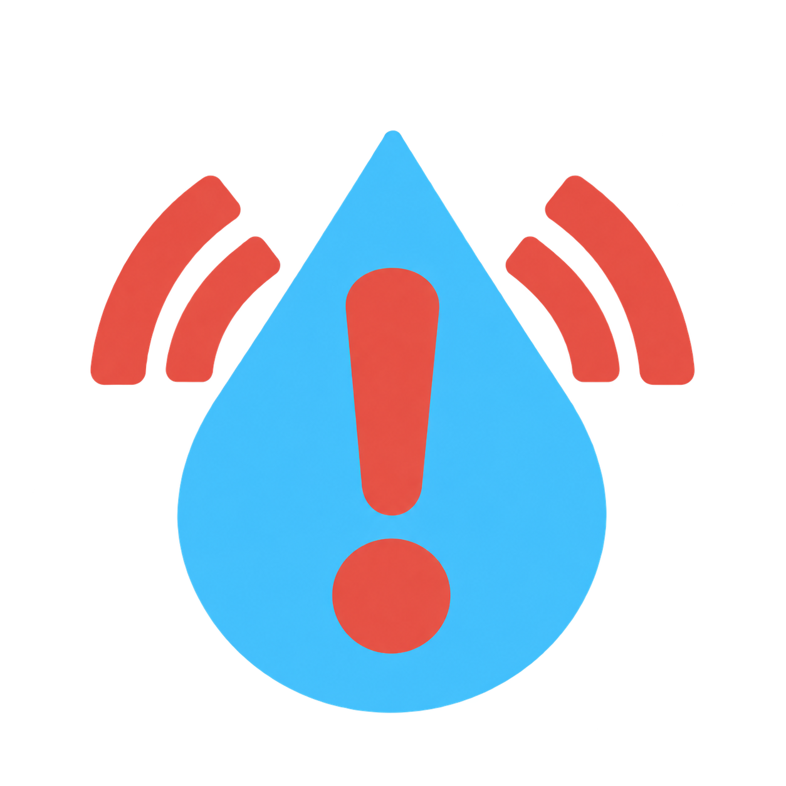

AquaSentinel
Real-time water safety warning
Is it a good day to get on the Delaware River? Find out with AquaSentinel. Every hour, we estimate whether the Center City reach is likely above the E. coli safety limit, and flag it Safe or Unsafe for recreation.
Each pull reads live data from the USGS Penn's Landing gauge (01467200)
and the PHL weather station (or the Open-Meteo weather model when the
station's rain record is incomplete).
How the status is decided: a disclosed
rainfall rule, not a model. The reach is flagged Unsafe when rain over the
two previous calendar days (48 hours, midnight to midnight) is at least
the rule threshold mm. A nearby combined-sewer
outfall reporting an overflow (now or in the past 72 hours) can also force
Unsafe; the banner then names the outfall. A model trained on past DRBC E. coli
samples runs alongside; “rule/model agreement” shows how strongly it agrees with the
rule, and is not the model's own verdict. Ben Franklin Bridge and Navy Yard are DRBC channel
stations, shown for context.
Demo site for OneAquaHealth IEEE Hackathon 2026
Philadelphia, PA · monitored reach
real coordinates · USGS + EPA WQP
USGS proxy gauge (live)
DRBC lab station
Weather station (NWS)
Monitored reach · alert
| PULL DATE | PULL TIME | RAIN PRIOR 2 DAYS mm · decides status | TURBIDITY FNU | TEMP °C | SP. COND µS/cm | DISS. O₂ mg/L | pH | RULE/MODEL AGREEMENT | CSO | STATUS |
|---|